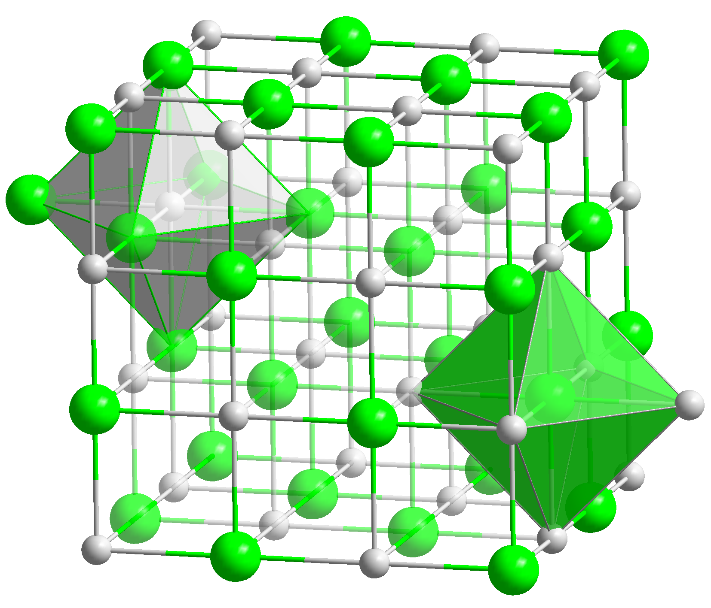
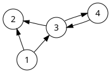
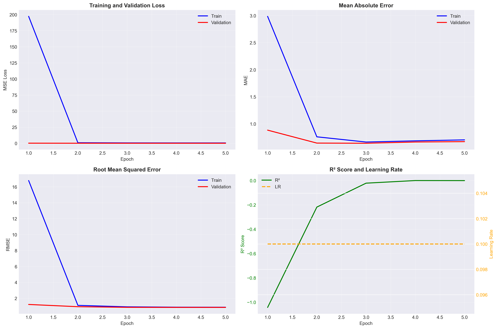
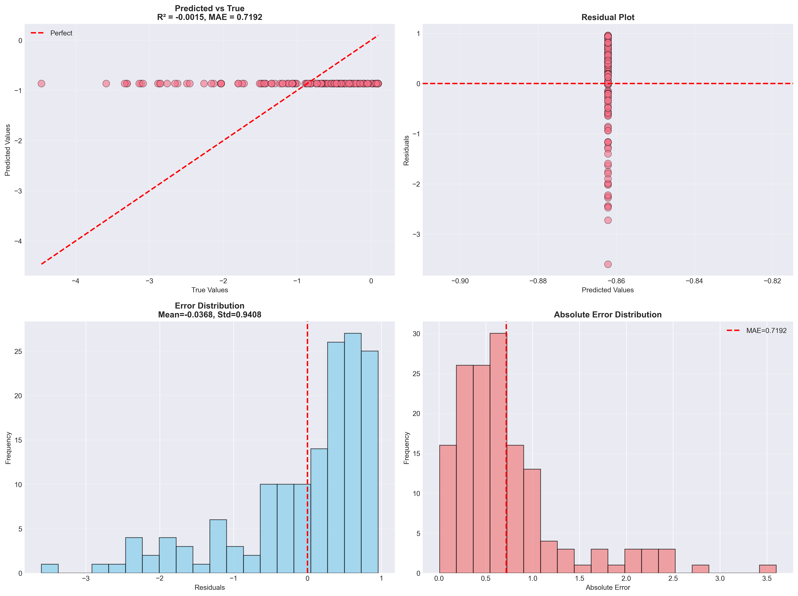

Predicting material properties directly from crystal structure graphs.
For the first part of this project, I looked into how we can use deep learning to predict material properties straight from their crystal structures. Running traditional DFT (Density Functional Theory) calculations takes way too much time, and older machine learning models require a lot of manual feature engineering. We wanted to see if graph neural networks could bypass all that.
I started off with a baseline repository that my project partner, Abhishek, had put together. It was a good starting point, but it was basically one massive block of code. My main goal for this phase was to break his code down into a clean, 8-step PyTorch notebook pipeline so we could actually debug it, swap out datasets, and run our tests without getting lost in the code.
The implementation is primarily based on the following research literature and resources:
Before writing the code, I had to understand how to actually feed a 3D crystal into a neural network. You can't just treat it like an image.
Normal Convolutional Neural Networks (CNNs) are great for images because pixels are in a perfect grid. But crystals are messy, because atoms have different bond lengths and connect to different numbers of neighbors. If you try to force a crystal into a 3D grid of voxels, mostly you just get empty space (sparse matrices), which wastes memory. It also breaks if the crystal rotates.
Also, crystals repeat infinitely in all directions. If you just look at one box (a unit cell), an atom on the left edge is actually bonded to an atom on the far right edge. Standard CNNs don't really handle this wrap-around logic well.

To address these limitations, CGCNN models the crystal as an undirected multigraph, denoted mathematically as \(G = (V, E)\). This approach allows the network to process atoms based on their chemical connectivity rather than their absolute spatial coordinates.

We can't just feed atomic numbers to the network (like Iron = 26, Aluminum = 13), because the math would assume Iron is "twice" as much as Aluminum, which doesn't make chemical sense. Instead, we give each atom a feature vector \(\mathbf{v}_i\).
To do this, we read a JSON file and one-hot encode basic properties like electronegativity, covalent radius, and group number. It basically gives the network a cheat sheet about the atom's chemistry before training even starts.
The network learns by having atoms "talk" to their neighbors. For a central atom \(i\), it looks at its neighbor \(j\) and the bond distance between them (\(\mathbf{u}_{ij}\), which we expand using a Gaussian filter). We stick all this info together into one big tensor: \(\mathbf{z}_{ij} = \mathbf{v}_i \oplus \mathbf{v}_j \oplus \mathbf{u}_{ij}\).
Then we pass it through a sigmoid gate. You can think of the gate as the network deciding, "Is this neighbor's information actually important for the property I'm trying to predict?"
After the atomic feature vectors are iteratively updated over multiple layers, they are collapsed into a single global representation of the entire crystal using a permutation-invariant Global Pooling layer (such as a normalized sum or mean). This crystal vector is then passed to fully connected layers to predict the target property, such as Formation Energy.
I used Google AI Studio heavily while refactoring Abhishek's code. Mostly, I needed help setting up the PyTorch boilerplate and figuring out why things were crashing. Here are some of the main prompts I used to get the pipeline working:
The original codebase was refactored into an 8-step Jupyter Notebook structure to make the data processing and training pipeline easier to follow and debug. Below is a breakdown of the function of each notebook.
01_atom_embeddings.ipynb)Input: A JSON file containing standard periodic table properties (electronegativity, volume, row, column).
Output: atom_init.json (A dictionary mapping atomic numbers to one-hot encoded feature vectors).
This notebook creates the initial embedding matrix, translating categorical atomic properties into standardized continuous vectors for the network to process.
# Excerpt from 01_atom_embeddings.ipynb
import json
import torch
import numpy as np
class AtomInitializer:
def __init__(self, atom_types):
self.atom_types = set(atom_types)
self._embedding = {}
def load_state_dict(self, state_dict):
self._embedding = state_dict
def get_atom_fea(self, atom_type):
return self._embedding[atom_type]
# Load categorical data and convert to PyTorch tensors
with open('atom_init.json', 'r') as f:
raw_data = json.load(f)
tensor_embeddings = {int(k): torch.Tensor(v) for k, v in raw_data.items()}
02_data_download.ipynb)Input: Materials Project API Key.
Output: A dataset of `.cif` structural files saved locally.
This notebook automates the downloading of crystallographic structures using the `mp-api` library to build the training dataset.
# Excerpt from 02_data_download.ipynb
from mp_api.client import MPRester
import os
import time
API_KEY = os.getenv("MP_API")
def download_structures(material_ids, output_dir):
os.makedirs(output_dir, exist_ok=True)
with MPRester(API_KEY) as mpr:
# Fetching documents directly utilizing the core MP API structure
docs = mpr.materials.summary.search(material_ids=material_ids)
for doc in docs:
try:
structure = doc.structure
# Save the raw crystal object directly to disk for processing
structure.to(filename=f"{output_dir}/{doc.material_id}.cif")
except Exception as e:
print(f"Rate limited. Backing off for {doc.material_id}...")
time.sleep(5) # Exponential backoff for API limits
03_graph_building.ipynb)Input: Raw `.cif` files.
Output: Node features, Edge indices, and Gaussian-expanded Edge distances.
This step converts a `.cif` file into an adjacency matrix. The script identifies neighbors within a specified radius while accounting for periodic boundaries.
# Excerpt from 03_graph_building.ipynb
import torch
import numpy as np
from pymatgen.core import Structure
class GaussianDistance(object):
def __init__(self, dmin, dmax, step, var=None):
self.filter = np.arange(dmin, dmax+step, step)
self.var = var if var is not None else step
def expand(self, distances):
# Expands a scalar distance into a gaussian basis vector
return np.exp(-(distances[..., np.newaxis] - self.filter)**2 / self.var**2)
def build_crystal_graph(cif_path, radius=8.0, max_num_nbr=12):
crystal = Structure.from_file(cif_path)
all_nbrs = crystal.get_all_neighbors(radius, include_index=True)
all_nbr_idx, all_nbr_dist = [], []
gdf = GaussianDistance(dmin=0, dmax=8.0, step=0.2)
for nbrs in all_nbrs:
nbrs = sorted(nbrs, key=lambda x: x.nn_distance)
nbr_idx = [x.index for x in nbrs[:max_num_nbr]]
nbr_dist = [x.nn_distance for x in nbrs[:max_num_nbr]]
while len(nbr_idx) < max_num_nbr: # Padding
nbr_idx.append(0)
nbr_dist.append(radius + 1.0)
all_nbr_idx.append(nbr_idx)
all_nbr_dist.append(nbr_dist)
return torch.LongTensor(all_nbr_idx), torch.Tensor(gdf.expand(np.array(all_nbr_dist)))
04_graph_visualization.ipynb)Input: Graph adjacency matrices.
Output: 2D plot renderings of the crystal multigraphs.
A visualization notebook used to verify that the graph building logic and periodic boundary bonding functioned correctly, plotted using NetworkX.
# Excerpt from 04_graph_visualization.ipynb
import networkx as nx
import matplotlib.pyplot as plt
def plot_crystal_graph(edge_indices, node_features):
G = nx.Graph()
# Populate NetworkX graph from PyTorch edge indices
for src, dst in zip(edge_indices[0], edge_indices[1]):
G.add_edge(src.item(), dst.item())
plt.figure(figsize=(8, 8))
pos = nx.spring_layout(G) # Simulate spatial repulsion
nx.draw_networkx_nodes(G, pos, node_size=300, node_color='skyblue')
nx.draw_networkx_edges(G, pos, width=1.5, alpha=0.5)
plt.title("Crystal Graph Adjacency Network")
plt.show()
05_cgcnn_data_loading.ipynb)Input: Processed graph lists.
Output: PyTorch DataLoader batches.
Since crystals have varying numbers of atoms, a custom collate function was implemented to dynamically concatenate the graphs into a block-diagonal format for batching.
# Excerpt from 05_cgcnn_data_loading.ipynb
import torch
def collate_pool(dataset_list):
batch_atom_fea, batch_nbr_fea, batch_nbr_fea_idx = [], [], []
crystal_atom_idx, batch_target = [], []
base_idx = 0
for i, (atom_fea, nbr_fea, nbr_fea_idx, target) in enumerate(dataset_list):
n_i = atom_fea.shape[0]
batch_atom_fea.append(atom_fea)
batch_nbr_fea.append(nbr_fea)
# Shift the neighbor indices by the base offset to prevent cross-graph connections
batch_nbr_fea_idx.append(nbr_fea_idx + base_idx)
crystal_atom_idx.append(torch.arange(n_i) + base_idx)
batch_target.append(target)
base_idx += n_i
return (torch.cat(batch_atom_fea, dim=0),
torch.cat(batch_nbr_fea, dim=0),
torch.cat(batch_nbr_fea_idx, dim=0),
crystal_atom_idx), torch.stack(batch_target, dim=0)
06_cgcnn_model.ipynb)Input: Batched graph tensors.
Output: Predicted target property (e.g., Formation Energy).
This notebook defines the core graph convolution layers, implementing the \(\mathbf{z}_{ij}\) gating logic to update node features.
# Excerpt from 06_cgcnn_model.ipynb
import torch
import torch.nn as nn
class ConvLayer(nn.Module):
def __init__(self, atom_fea_len, nbr_fea_len):
super(ConvLayer, self).__init__()
self.fc_full = nn.Linear(2 * atom_fea_len + nbr_fea_len, 2 * atom_fea_len)
self.sigmoid = nn.Sigmoid()
self.softplus = nn.Softplus()
def forward(self, atom_in_fea, nbr_fea, nbr_fea_idx):
N, M = nbr_fea_idx.shape
# Gather neighbor atomic features
atom_nbr_fea = atom_in_fea[nbr_fea_idx, :]
# z_ij = v_i ⊕ v_j ⊕ u_ij
total_fea = torch.cat(
[atom_in_fea.unsqueeze(1).expand(N, M, -1), atom_nbr_fea, nbr_fea], dim=2
)
total_fea = self.fc_full(total_fea)
# Split output into filter and core tensor for gating
nbr_filter, nbr_core = total_fea.chunk(2, dim=2)
nbr_filter = self.sigmoid(nbr_filter)
nbr_core = self.softplus(nbr_core)
# Sum the gated messages
nbr_sumed = torch.sum(nbr_filter * nbr_core, dim=1)
return self.softplus(atom_in_fea + nbr_sumed)
07_cgcnn_training.ipynb)Input: Initialized Model, Optimizer, Loss Function, and DataLoader.
Output: Trained PyTorch model checkpoints (.pth).
This notebook contains the standard PyTorch training loop, using the Adam optimizer to minimize the Mean Squared Error (MSE).
# Excerpt from 07_cgcnn_training.ipynb
import torch
import torch.nn as nn
import torch.optim as optim
def train(train_loader, model, criterion, optimizer, epoch):
model.train()
total_loss = 0.0
for i, (input_data, target) in enumerate(train_loader):
# Move tensors to GPU
atom_fea, nbr_fea, nbr_fea_idx, crystal_atom_idx = input_data
target = target.cuda()
# Forward Pass
output = model(atom_fea.cuda(), nbr_fea.cuda(), nbr_fea_idx.cuda(), crystal_atom_idx)
loss = criterion(output, target)
# Backward Pass & Optimization
optimizer.zero_grad()
loss.backward()
optimizer.step()
total_loss += loss.item()
print(f"Epoch {epoch} | Training Loss: {total_loss / len(train_loader):.4f}")
08_cgcnn_complete.ipynb)Input: Trained Model weights and test dataset.
Output: Final Parity plots and MAE metrics.
The final notebook evaluates the best saved checkpoint on the hold-out test set to generate performance plots.
# Excerpt from 08_cgcnn_complete.ipynb
import matplotlib.pyplot as plt
from sklearn.metrics import mean_absolute_error, r2_score
# Assuming test_predictions and test_targets are gathered from the model
mae = mean_absolute_error(test_targets, test_predictions)
r2 = r2_score(test_targets, test_predictions)
plt.figure(figsize=(8, 8))
plt.scatter(test_targets, test_predictions, alpha=0.5, color='dodgerblue')
plt.plot([-5, 5], [-5, 5], 'r--') # Perfect prediction line
plt.xlabel("True Formation Energy (eV/atom)")
plt.ylabel("Predicted Formation Energy (eV/atom)")
plt.title(f"CGCNN Parity Plot (MAE: {mae:.3f} eV/atom)")
plt.show()
Refactoring this wasn't totally straightforward. I ran into a bunch of PyTorch errors and API limits that I had to manually debug.
An initial implementation of the global pooling layer caused CUDA memory leaks. Using a standard Python for loop to iterate over atoms caused the PyTorch autograd engine to retain large computational graphs, leading to out-of-memory errors on the GPU.
# Caused OOM memory leak by retaining graph state in loop
def pooling(self, atom_fea, crystal_atom_idx):
crys_fea = []
for i in range(len(crystal_atom_idx)):
idx_map = crystal_atom_idx[i]
crystal_tensors = atom_fea[idx_map]
mean_tensor = torch.mean(crystal_tensors, dim=0, keepdim=True)
crys_fea.append(mean_tensor)
return torch.cat(crys_fea, dim=0)
# Fix implemented in 06_cgcnn_model.ipynb
def pooling(self, atom_fea, crystal_atom_idx):
# Optimized list comprehension bypassing loop overhead
summed_fea = [torch.mean(atom_fea[idx_map], dim=0, keepdim=True)
for idx_map in crystal_atom_idx]
return torch.cat(summed_fea, dim=0)
Using a standard PyTorch DataLoader resulted in a RuntimeError because crystals have varying numbers of atoms (resulting in unequal tensor sizes). Standard loaders expect uniform batch dimensions.
Solution: A custom Python collate function was implemented to stitch the varying graphs into a single block-diagonal matrix using an index mapping dictionary.
# Standard DataLoader ignores variable-sized graph tensors
from torch.utils.data import DataLoader
# Crashed with RuntimeError: stack expects each tensor to be equal size
loader = DataLoader(dataset, batch_size=256, shuffle=True)
# Fix implemented in 05_cgcnn_data_loading.ipynb
from torch.utils.data import DataLoader
# Batching routed through the custom collate_pool function
loader = DataLoader(dataset, batch_size=256, shuffle=True, collate_fn=collate_pool)
Downloading a large number of `.cif` files from the Materials Project API triggered HTTP 429 Rate Limit errors, causing the script to halt.
Solution: A retry wrapper using exponential backoff with the time.sleep() module was added in 02_data_download.ipynb to pause execution upon encountering rate limits.
# Naive iteration aborted upon hitting API Rate Limits
docs = mpr.materials.summary.search(material_ids=material_ids)
for doc in docs:
structure = doc.structure
structure.to(filename=f"{output_dir}/{doc.material_id}.cif")
# Fix implemented in 02_data_download.ipynb
import time
docs = mpr.materials.summary.search(material_ids=material_ids)
for doc in docs:
try:
structure = doc.structure
structure.to(filename=f"{output_dir}/{doc.material_id}.cif")
except Exception as e:
print(f"Rate limited. Backing off for {doc.material_id}...")
time.sleep(5) # Pause execution to clear the HTTP 429 block
The CGCNN pipeline was trained and evaluated on the downloaded dataset. Below are the plots generated from the testing phase, demonstrating the model's performance.

Observations from Training Progress:

Observations from Prediction Analysis:
Overall, getting the CGCNN to work was a great way to understand graph neural networks. Breaking it down into the 8 notebooks really helped me wrap my head around how the graph construction and message passing actually work under the hood.
That said, CGCNN has a pretty big flaw: it only uses the scalar distance between atoms. That's fine if you just want to predict a single number like Formation Energy, but it completely ignores the 3D angles between bonds. If you try to predict vector forces with it, it struggles.
Because of this, I decided to move on to the next phase of the project: testing out ACE and MACE to see how equivariant models handle directional forces.